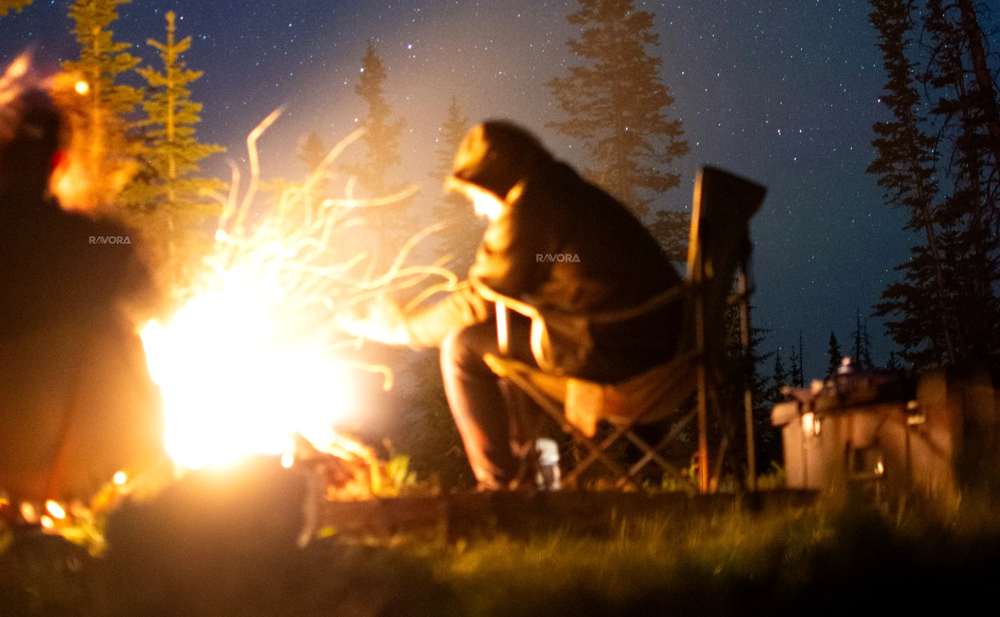

Uzun ömürlü kullanım
Tek sezonluk tüketim yerine, farklı rotalarda yıllarca kullanılabilecek dayanıklı ve zamansız ürün yaklaşımını esas alıyoruz.

Tek sezonluk tüketim yerine, farklı rotalarda yıllarca kullanılabilecek dayanıklı ve zamansız ürün yaklaşımını esas alıyoruz.
Gereksiz malzeme, ambalaj ve operasyon adımlarını azaltmayı; gerekeni ise daha doğru ve verimli kullanmayı hedefliyoruz.
Ulaşılmamış hedefleri gerçekleşmiş gibi sunmak yerine, gelişim alanlarını açıkça tanımlayıp ilerlemeyi ölçülebilir hale getirmeyi önemsiyoruz.
Bir ürünün daha uzun süre kullanılabilmesi; tasarım, malzeme, bakım ve kullanıcı alışkanlıklarının birlikte değerlendirilmesini gerektirir.
Bu nedenle zamansız görünüm, aşınmaya dirençli yapı ve açık bakım bilgileri ürün yaklaşımımızın ayrılmaz parçalarıdır.
